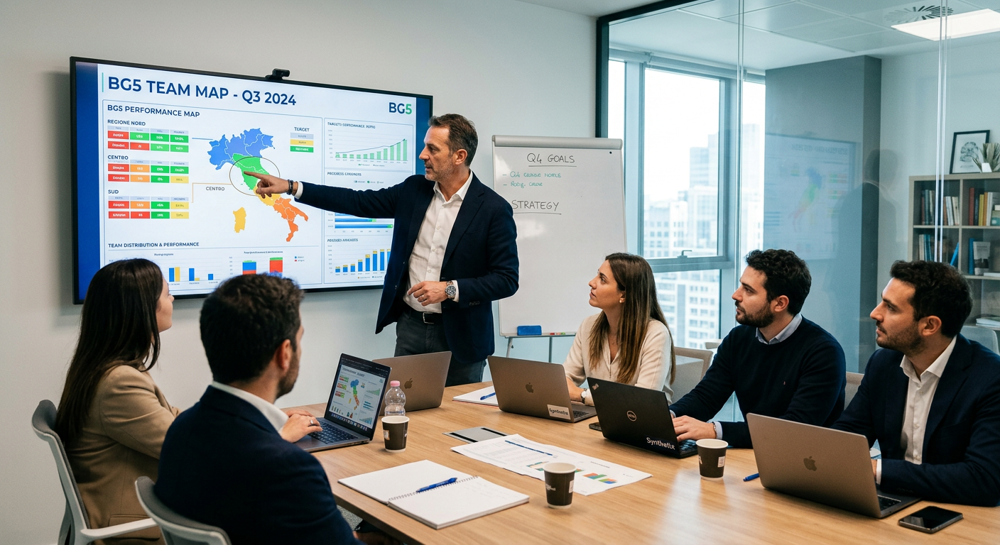

Human Design in azienda: come usarlo per team e leadership
Il BG5 applicato in azienda dà al manager una mappa precisa di come ogni persona nel team funziona, decide e interagisce. Ecco come usarlo per la leadership.

Hai un team competente, eppure le riunioni si incagliano sempre sugli stessi attriti. Le deleghe tornano indietro. Qualcuno lavora il doppio, qualcun altro sembra frenare. Il problema, quasi sempre, non è la competenza. È la meccanica.
Il BG5 — la branca aziendale dello Human Design — offre al manager uno strumento per leggere quella meccanica. Non è teoria motivazionale e non è team building. È una mappa precisa di come ogni persona nel tuo team funziona, decide e interagisce nel contesto lavorativo.
Perché i team si bloccano anche quando le persone sono capaci?
La risposta più comune è "problemi di comunicazione". Quella più onesta è che nessuno ha mai guardato come le persone nel gruppo funzionano davvero. Non cosa sanno fare, ma come lo fanno. Con che ritmo. Con che tipo di energia. Con quale modo di prendere decisioni.
Un collaboratore che ha bisogno di spazio autonomo per produrre e uno che cerca confronto costante finiranno in attrito. Non per cattiva volontà. Per meccanica opposta. Se tu, come manager, non vedi questa differenza strutturale, la interpreti come conflitto personale. E intervieni nel modo sbagliato: mediazione emotiva su un problema che è architetturale.
Il BG5 rende visibili queste differenze. Usa dati astronomici fissi — data, ora, luogo di nascita — per calcolare il Success Code (BodyGraph in Human Design) di ogni persona. Il risultato non cambia in base all'umore del giorno o al contesto del test. È un riferimento stabile, ripetibile, verificabile nel tempo.
Che cosa vede il manager con il BG5 che oggi non vede?
Gli strumenti classici — MBTI, DISC, Enneagramma — ti dicono come una persona si percepisce in quel momento. Il BG5 ti dice come è progettata per funzionare, indipendentemente da come si percepisce. La differenza è enorme in termini pratici.
Con il BG5 vedi il Tipo di Carriera (Tipo in Human Design) di ogni collaboratore: il modo in cui quella persona è strutturata per entrare in azione, interagire con il gruppo e produrre risultati. Vedi la sua Autorità Decisionale (Autorità Interiore in Human Design): il meccanismo interno con cui prende le decisioni migliori. E vedi come queste meccaniche si combinano quando le persone lavorano insieme.
Un esempio concreto. Hai due collaboratori che gestiscono lo stesso progetto. Uno è un Costruttore Classico (Generatore Puro in Human Design): produce risultati eccellenti quando risponde a richieste chiare e lavora su compiti che lo soddisfano. L'altro è un Iniziatore (Manifestatore in Human Design): ha bisogno di avviare, impostare la direzione, agire con autonomia. Se li metti entrambi sullo stesso flusso operativo senza distinguere i ruoli, il Costruttore Classico si frustra perché non riceve input precisi, e l'Iniziatore si blocca perché non ha spazio per agire. Con il BG5 sai come strutturare la collaborazione prima che il problema si presenti.
Come cambia la tua leadership quando conosci il tuo Tipo di Carriera?
La leadership nel BG5 non è un tratto caratteriale. È una meccanica. E il tuo Tipo di Carriera determina quale stile di leadership funziona per te — non quello che hai letto in un libro di management.
Se sei una Guida (Proiettore in Human Design), la tua forza è leggere il sistema. Vedi chi sta funzionando e chi no, capisci dove redistribuire le risorse, sai chi è nella posizione giusta. La tua leadership funziona quando il team ti riconosce e ti consulta. Se imponi la tua visione senza quel riconoscimento, crei resistenza. La Guida che forza è inefficace. La Guida che aspetta il momento giusto produce risultati che gli altri Tipi non possono ottenere.
Se sei un Costruttore Rapido (Generatore Manifestante in Human Design), sei veloce, multi-canale, capace di iniziare e portare a termine. La tua energia è contagiosa e il team ti segue quando ti vede coinvolto. Il rischio è bruciare le tappe. Nei progetti complessi dove i dettagli contano, hai bisogno di qualcuno nel team che rallenti il ritmo dove serve — e devi lasciarlo fare.
Se sei un Valutatore (Riflettore in Human Design), hai una capacità rara: percepisci la salute del sistema prima degli altri. Non decidi velocemente, hai bisogno di tempo e di cicli. Le aziende faticano a riconoscere il tuo valore perché non produci output costante. Eppure sei la persona che, se ascoltata, dice cosa non funziona prima che diventi un problema serio. In ruoli di valutazione, mediazione e quality assurance, il tuo contributo è prezioso.
Che cos'è il Penta e perché il tuo team ne ha uno?
Il Penta è il concetto più operativo del BG5 per chi gestisce piccoli gruppi. Un team di 3-5 persone genera un campo energetico con proprietà proprie — diverse dalla somma dei singoli membri. Questo campo ha centri "coperti" (le forze naturali del gruppo) e centri "mancanti" (le aree di debolezza strutturale).
Immagina un team di quattro persone dove nessuno ha il centro della comunicazione attivo nel Penta. Quel team produrrà risultati, ma faticherà a comunicarli all'esterno. Le presentazioni saranno deboli. I report arriveranno in ritardo. Non perché le persone non sanno scrivere o parlare, ma perché il gruppo come sistema non ha quell'energia disponibile in modo naturale.
Il manager che conosce il Penta del suo team sa dove compensare. Può inserire una risorsa esterna per coprire la lacuna. Può creare processi che suppliscono alla mancanza. Oppure può semplicemente sapere che quella zona richiede più attenzione e più tempo. In ogni caso, non è più sorpreso quando il team fatica in un'area specifica. Lo aveva previsto.
Come si introduce il BG5 in un team senza creare resistenze?
Questa è la domanda che i manager mi fanno più spesso. La risposta è: si parte da te. Il primo passo è sempre la tua Analisi BG5 (Reading Human Design in contesto individuale). Conosci il tuo Tipo di Carriera, la tua Autorità Decisionale, le tue aree di forza naturali. Capisci dove deleghi bene e dove tendi a trattenere compiti che altri farebbero meglio.
Il secondo passo è la mappatura del team, con il consenso esplicito dei collaboratori. Non è un test obbligatorio. Ogni persona fornisce data, ora e luogo di nascita volontariamente. La mappa che ne risulta mostra al manager come ciascuno funziona al meglio, come dargli feedback efficaci, come strutturare le interazioni.
Il terzo passo è l'analisi Penta: guardare il team come unità. Forze, lacune, flussi energetici tra i membri. Qui emergono informazioni che nessun altro strumento può dare, perché nessun altro strumento guarda il gruppo come sistema energetico autonomo.
Il quarto passo è l'applicazione continuativa. La lettura BG5 entra nel toolkit manageriale ordinario: nelle revisioni di performance, nella gestione dei conflitti, nelle decisioni di assunzione o riorganizzazione. Non è un evento una tantum. È un modo diverso di leggere le dinamiche del tuo team, ogni giorno.
Perché il BG5 funziona dove i questionari falliscono?
I test di personalità tradizionali hanno un limite strutturale: sono soggettivi. Il risultato dipende da come la persona si sente nel momento in cui compila il questionario. Un manager stressato risponde diversamente da un manager rilassato. Lo stesso vale per i collaboratori. Questo rende i risultati instabili — utili come spunto di riflessione, poco affidabili come base per decisioni organizzative.
Il BG5 elimina questa variabile. I dati di input sono fissi e verificabili. La carta di una persona calcolata oggi è identica a quella calcolata tra dieci anni. Questo lo rende uno strumento su cui puoi costruire nel tempo: le osservazioni che fai oggi restano valide domani. Le dinamiche di team che mappi oggi restano il riferimento anche quando il contesto cambia.
Un direttore HR che ha lavorato con me ha usato la mappatura BG5 per rivedere la composizione di tre team commerciali che sottoperformavano da mesi. In due dei tre casi, il problema era una lacuna nel Penta: mancava energia di iniziativa. Nessuno nel gruppo era strutturato per avviare nuove trattative in modo autonomo. La soluzione non è stata un corso di formazione. È stato uno spostamento mirato di una persona da un team all'altro, sulla base della mappa BG5. I risultati si sono visti nel trimestre successivo.
Cosa succede quando il leader smette di gestire tutti allo stesso modo?
La tentazione del management è standardizzare. Un processo uguale per tutti, un feedback uguale per tutti, una struttura uguale per tutti. È efficiente sulla carta. Nella realtà produce attrito, perché le persone non funzionano tutte allo stesso modo.
Il Costruttore Classico ha bisogno di domande chiare a cui rispondere. Se gli dai direttive vaghe, la sua Risorsa Energetica (Sacrale in Human Design) non si attiva e il suo output cala. L'Iniziatore ha bisogno di sapere che può agire senza chiedere permesso su un perimetro definito. Se lo costringi ad approvazioni continue, si spegne. La Guida ha bisogno di essere invitata a contribuire con la sua visione. Se la escludi dalle decisioni strategiche, perdi l'intelligenza più acuta del tuo team.
Queste non sono preferenze caratteriali. Sono meccaniche operative. Il manager che le conosce calibra il proprio stile su ogni persona. Non lavora di più. Lavora con più precisione. E il team risponde.
Da dove parti tu
Se gestisci un team e vuoi capire perché certe dinamiche si ripetono nonostante la buona volontà di tutti, il BG5 ti dà una lettura che altri strumenti non possono offrire. Non ti dice chi è bravo e chi no. Ti dice come funziona ogni persona e come funziona il gruppo che quelle persone formano insieme.
Lavoro con aziende, team e manager attraverso consulenze BG5 individuali e di gruppo: analisi del Tipo di Carriera del leader, mappatura del team, analisi Penta per piccoli gruppi, supporto nelle decisioni di riorganizzazione e assunzione. Se vuoi esplorare come il BG5 può aiutarti a gestire il tuo team con più precisione, contattami su valentinarussobg5.com.
Domande Frequenti
Qual è la differenza tra Human Design e BG5 in azienda?
Lo Human Design è il sistema completo di autoconoscenza individuale. Il BG5 è la sua applicazione specifica al business: stessa carta di base calcolata da data, ora e luogo di nascita, ma con un framework calibrato su carriera, performance lavorativa, team design e compatibilità professionale. In azienda si usa il BG5 perché il linguaggio e le categorie sono pensati per il contesto organizzativo.
Come può un manager usare il BG5 con il suo team?
Il manager inizia dalla lettura della propria carta BG5 per capire il proprio stile di leadership e le aree di forza naturali. Poi, con il consenso dei collaboratori, costruisce la mappa BG5 del gruppo: Tipi di Carriera, strategie, centri attivi. Questa mappa indica chi ha bisogno di autonomia, chi di struttura, chi di riconoscimento esplicito. Non etichetta le persone: dà al manager uno strumento per calibrare comunicazione e delega.
Che cos'è il Penta nel BG5 e perché è utile per i team?
Il Penta è il campo energetico che si crea in un gruppo di 3-5 persone. Ha proprietà proprie, diverse dalla somma dei singoli membri. Centri coperti nel Penta rappresentano forze naturali del team; centri mancanti indicano aree di debolezza prevedibili. Il manager che conosce il Penta del suo team sa dove compensare consapevolmente, con risorse esterne o processi mirati.
Il BG5 è più affidabile dei test di personalità tradizionali?
Il BG5 usa dati astronomici fissi (data, ora, luogo di nascita): il risultato non cambia in base all'umore o al contesto del test. Gli strumenti tradizionali come MBTI, DISC o Enneagramma si basano su questionari soggettivi, e il risultato può variare. Questo rende il BG5 un riferimento stabile nel tempo, particolarmente utile in contesti aziendali dove servono dati ripetibili.
Vuoi portare il BG5® nella tua azienda?
Se vuoi capire come si applica alla tua realtà, scopri i servizi disponibili. Se sai già cosa cerchi, prenota una consulenza diretta.
Continua a leggere

Ansia da decisione: perché non riesci a scegliere e come uscirne
Ti blocchi davanti alle decisioni importanti? L'ansia da scelta ha una causa precisa: stai usando la mente per decidere …
Leggi articolo →
Come aspettare l'invito senza perdere lo slancio professionale
Se sei una Guida e senti che aspettare l'invito ti blocca la carriera, questo articolo ti mostra come affinare la tua fr…
Leggi articolo →
Assumere la persona sbagliata costa 30.000 euro: un metodo per non sbagliare
Un'assunzione sbagliata costa 6-9 mesi di stipendio. Il curriculum non ti dice come la persona gestisce lo stress, prend…
Leggi articolo →
BG5: perché attiri certi clienti (e come smettere di sbagliarti)
Stai attirando clienti sbagliati? Con il BG5 scopri la meccanica reale dietro la tua clientela e come la coerenza cambia…
Leggi articolo →